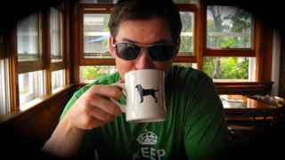
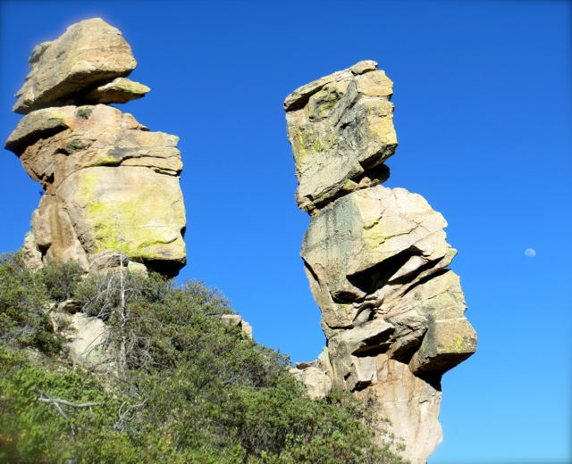

Andrew
He's at his best when he strives to discover alternative paths, to understand the underlying motivations of himself and others, and continues to ask "Why?"

Resume, Professional Achievements
See my resume here
See My Linked-In Profile here
Getting out of the comfort zone
For 12 weeks Andrew will take a break from the Washington DC consulting scene in which he has been an active part in for the past 6+ years to undergo in depth learning in web development to increase his technical skill set, explore new workflows and ways of thinking, and to continue to ask "why?"
Wish list - What is to be gained?
If he could pick the outcomes of the course, what would they be?
- First hand experience with open source development
- Solid ability to program in ruby on rails
- Newfound understanding of "Engineering mindset"
- Increased technical aptitude to be combined with existing project management skills
- Hands on experience with agile development efforts
- Completion of the Metis Syllabus.
- Ability to create an amazing business app to help with contract management at small consulting firms
Other Enjoyable Stuff
Andrew's interests are varried, but mostly he just likes treating free time like, well, free time. Andrew prefers to live in the moment, and to leave the project planning of "free time" to others. On good days those free moments are spent out in the woods, on a rock face, or just somewhere that's 60 degrees and sunny with a cool mountain breeze.
When Andrew is not working he's usually doing one of these things:
- Rock Climbing
- Having a blast with the lovely wife
- Taming wild beasts like our dog Pepper
- Traveling
- Enjoying leisurely weekend breakfasts cooked on a cast iron skillet and accompanied by strong black coffee
- Nerding around on the computer, or with my latest gear gadget
- Re-learning all the basics of HTML and CSS that I dabbled in oh-so many years ago
